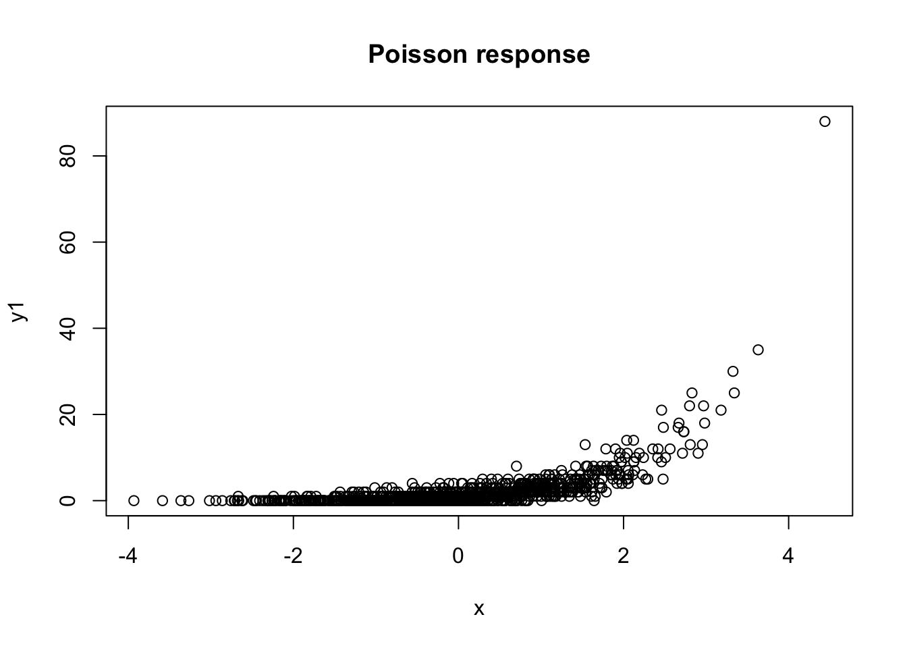
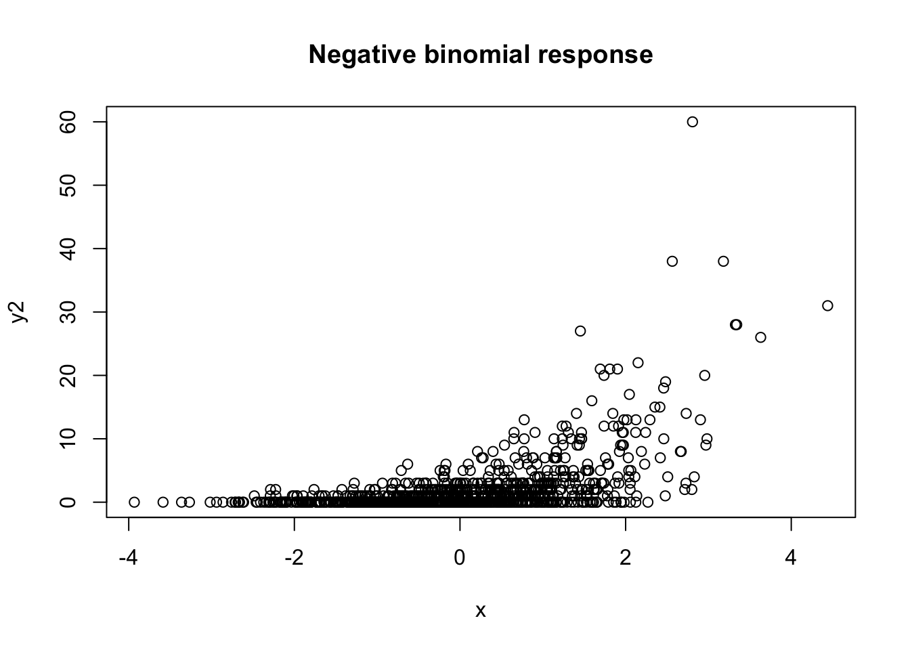
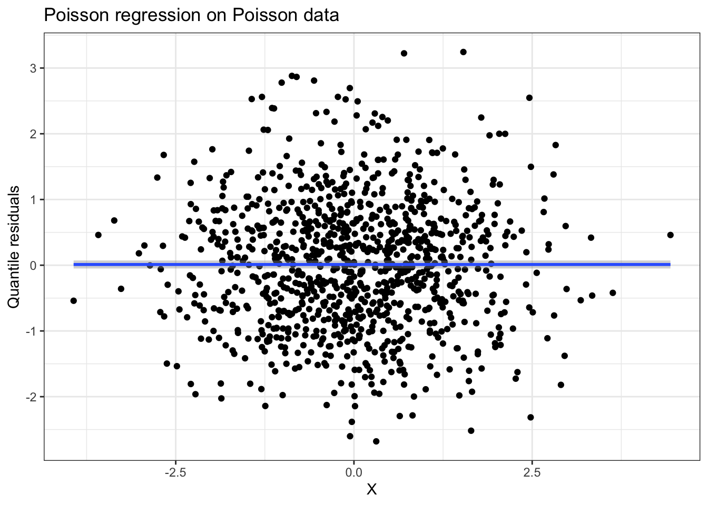
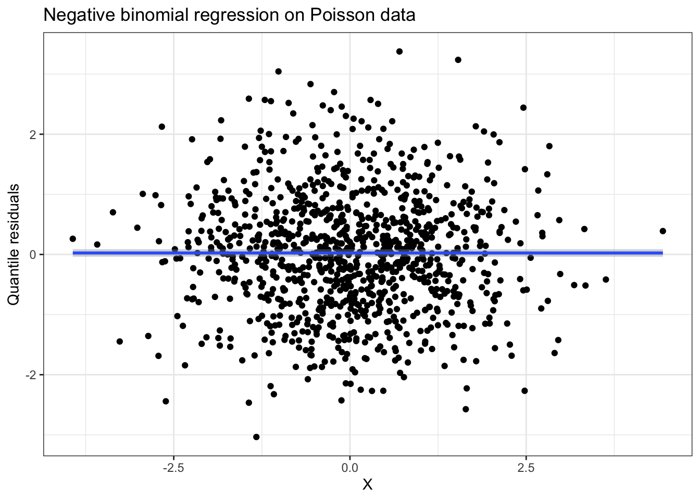
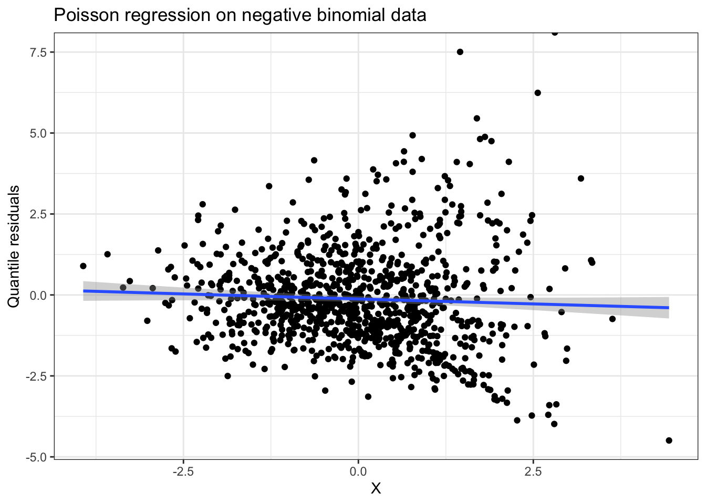
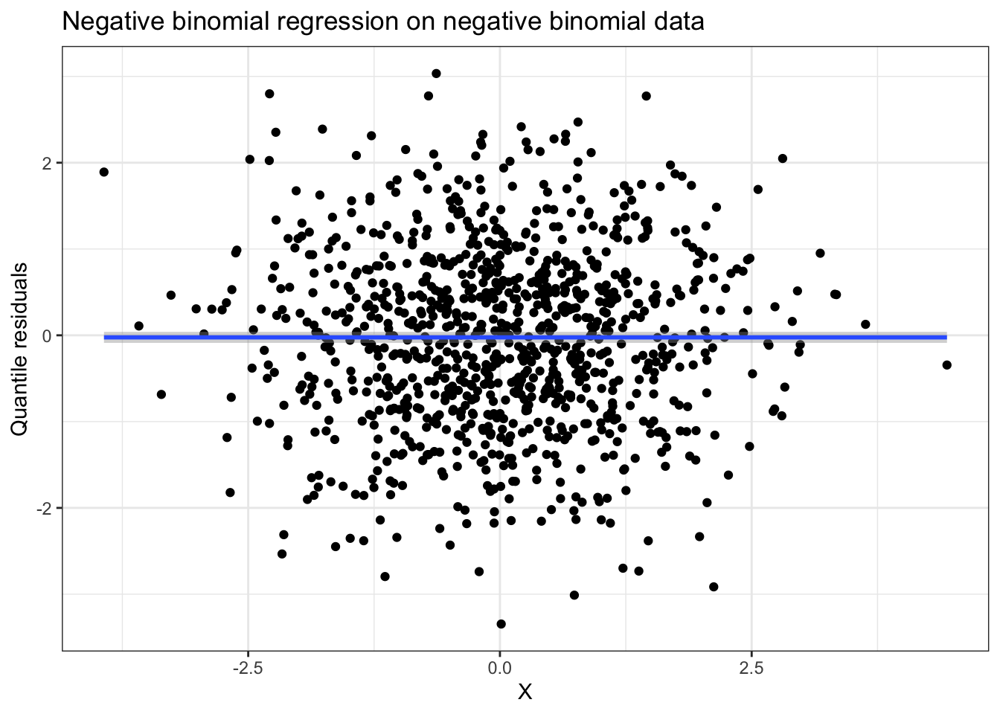
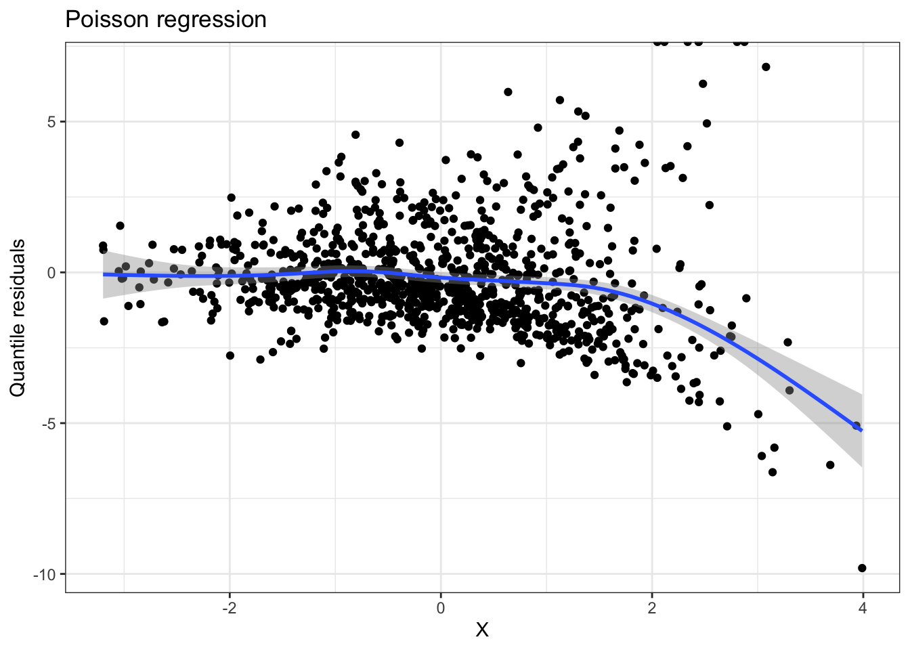
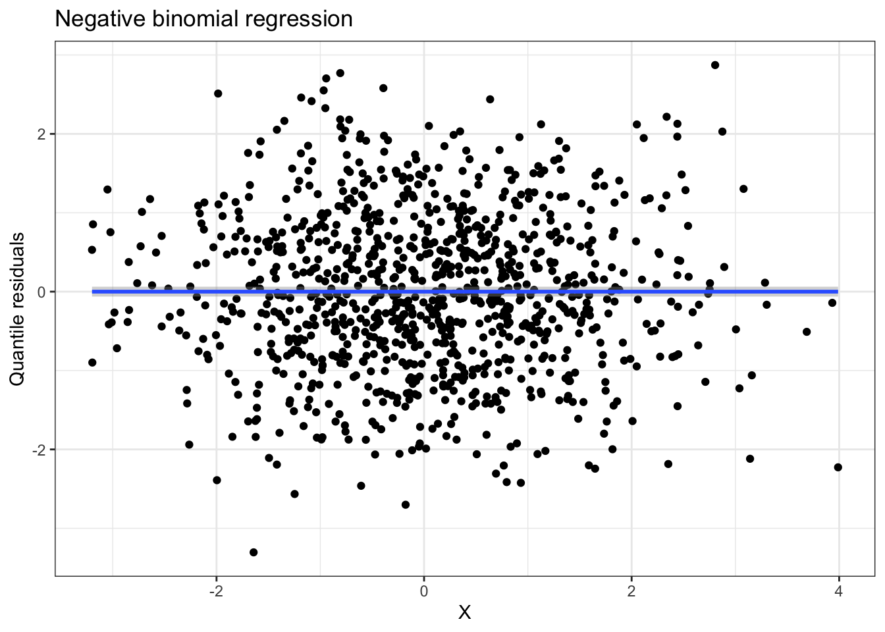
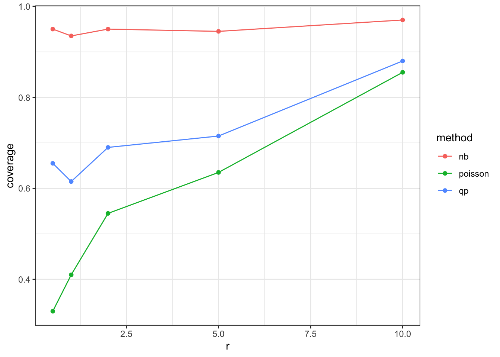
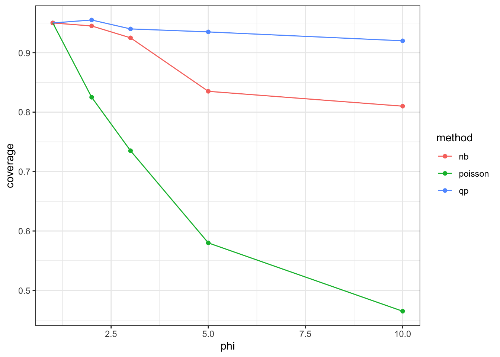

set.seed(11)
r <- 1
x <- rnorm(1000, mean=0, sd=1.2)
y1 <- rpois(1000, lambda = exp(x))
y2 <- rnbinom(1000, size=r, mu=exp(x))Class activity solutions
Part I
plot(x, y1, main = "Poisson response")
plot(x, y2, main = "Negative binomial response")
- There is much more variability in the negative binomial data than in the Poisson data. (If we change the size parameter
r, we can control the variability in the NB data. Increasingrwill decrease the variability, and make the data look closer to the Poisson data).
library(MASS)
library(statmod)
library(tidyverse)
m1 <- glm(y1 ~ x, family = poisson)
m2 <- glm.nb(y1 ~ x)
summary(m1)
Call:
glm(formula = y1 ~ x, family = poisson)
Coefficients:
Estimate Std. Error z value Pr(>|z|)
(Intercept) -0.01657 0.03418 -0.485 0.628
x 1.00281 0.01748 57.378 <2e-16 ***
---
Signif. codes: 0 '***' 0.001 '**' 0.01 '*' 0.05 '.' 0.1 ' ' 1
(Dispersion parameter for poisson family taken to be 1)
Null deviance: 4155.8 on 999 degrees of freedom
Residual deviance: 1019.9 on 998 degrees of freedom
AIC: 2685.9
Number of Fisher Scoring iterations: 5summary(m2)
Call:
glm.nb(formula = y1 ~ x, init.theta = 4123.887396, link = log)
Coefficients:
Estimate Std. Error z value Pr(>|z|)
(Intercept) -0.01653 0.03421 -0.483 0.629
x 1.00278 0.01753 57.199 <2e-16 ***
---
Signif. codes: 0 '***' 0.001 '**' 0.01 '*' 0.05 '.' 0.1 ' ' 1
(Dispersion parameter for Negative Binomial(4123.887) family taken to be 1)
Null deviance: 4151.3 on 999 degrees of freedom
Residual deviance: 1019.4 on 998 degrees of freedom
AIC: 2687.9
Number of Fisher Scoring iterations: 1
Theta: 4124
Std. Err.: 25873
Warning while fitting theta: alternation limit reached
2 x log-likelihood: -2681.927 data.frame(x = x, resids = qresid(m1)) %>%
ggplot(aes(x = x, y = resids)) +
geom_point() +
geom_smooth() +
labs(x = "X", y = "Quantile residuals",
title = "Poisson regression on Poisson data") +
theme_bw()
data.frame(x = x, resids = qresid(m2)) %>%
ggplot(aes(x = x, y = resids)) +
geom_point() +
geom_smooth() +
labs(x = "X", y = "Quantile residuals",
title = "Negative binomial regression on Poisson data") +
theme_bw()
The estimated coefficients for the two models are almost identical. For the NB model, \(\widehat{r} = 4124\) (you will get different estimates for different seeds).
Both quantile residual plots look good.
m1 <- glm(y2 ~ x, family = poisson)
m2 <- glm.nb(y2 ~ x)
summary(m1)
Call:
glm(formula = y2 ~ x, family = poisson)
Coefficients:
Estimate Std. Error z value Pr(>|z|)
(Intercept) 0.06310 0.03323 1.899 0.0576 .
x 0.92253 0.01792 51.493 <2e-16 ***
---
Signif. codes: 0 '***' 0.001 '**' 0.01 '*' 0.05 '.' 0.1 ' ' 1
(Dispersion parameter for poisson family taken to be 1)
Null deviance: 5006.5 on 999 degrees of freedom
Residual deviance: 2464.8 on 998 degrees of freedom
AIC: 3870.7
Number of Fisher Scoring iterations: 5summary(m2)
Call:
glm.nb(formula = y2 ~ x, init.theta = 0.9706791325, link = log)
Coefficients:
Estimate Std. Error z value Pr(>|z|)
(Intercept) 0.03284 0.04998 0.657 0.511
x 0.94940 0.04178 22.726 <2e-16 ***
---
Signif. codes: 0 '***' 0.001 '**' 0.01 '*' 0.05 '.' 0.1 ' ' 1
(Dispersion parameter for Negative Binomial(0.9707) family taken to be 1)
Null deviance: 1681.70 on 999 degrees of freedom
Residual deviance: 942.15 on 998 degrees of freedom
AIC: 3067.9
Number of Fisher Scoring iterations: 1
Theta: 0.9707
Std. Err.: 0.0899
2 x log-likelihood: -3061.9390 data.frame(x = x, resids = qresid(m1)) %>%
ggplot(aes(x = x, y = resids)) +
geom_point() +
geom_smooth() +
labs(x = "X", y = "Quantile residuals",
title = "Poisson regression on negative binomial data") +
theme_bw()
data.frame(x = x, resids = qresid(m2)) %>%
ggplot(aes(x = x, y = resids)) +
geom_point() +
geom_smooth() +
labs(x = "X", y = "Quantile residuals",
title = "Negative binomial regression on negative binomial data") +
theme_bw()
The estimated coefficients are pretty similar.
The quantile residual plot for the Poisson model shows a clear violation of the assumptions, with increasing variability and non-constant variance.
Part II
r <- 0.5
x <- rnorm(1000, mean=0, sd=1.2)
y <- rnbinom(1000, size=r, mu=exp(x))
m1 <- glm(y ~ x, family = poisson)
m2 <- glm.nb(y ~ x)
data.frame(x = x, resids = qresid(m1)) %>%
ggplot(aes(x = x, y = resids)) +
geom_point() +
geom_smooth() +
labs(x = "X", y = "Quantile residuals",
title = "Poisson regression") +
theme_bw()
data.frame(x = x, resids = qresid(m2)) %>%
ggplot(aes(x = x, y = resids)) +
geom_point() +
geom_smooth() +
labs(x = "X", y = "Quantile residuals",
title = "Negative binomial regression") +
theme_bw()
As before the Poisson quantile residual plot shows clear violations of the model assumptions.
rs <- c(0.5, 1, 2, 5, 10)
coverage_poisson <- rep(NA, length(rs))
coverage_qp <- rep(NA, length(rs))
coverage_nb <- rep(NA, length(rs))
nsim <- 200
for(i in 1:length(rs)){
r <- rs[i]
covers_poisson <- rep(NA, nsim)
covers_qp <- rep(NA, nsim)
covers_nb <- rep(NA, nsim)
for(j in 1:nsim){
x <- rnorm(1000, mean=0, sd=1.2)
y <- rnbinom(1000, size=r, mu=exp(x))
m1 <- glm(y ~ x, family = poisson)
m2 <- glm.nb(y ~ x)
m3 <- glm(y ~ x, family = quasipoisson)
lower_p <- m1$coefficients[2] - 1.96*summary(m1)$coefficients[2,2]
upper_p <- m1$coefficients[2] + 1.96*summary(m1)$coefficients[2,2]
lower_nb <- m2$coefficients[2] - 1.96*summary(m2)$coefficients[2,2]
upper_nb <- m2$coefficients[2] + 1.96*summary(m2)$coefficients[2,2]
lower_qp <- m3$coefficients[2] - qt(0.975, 998)*summary(m3)$coefficients[2,2]
upper_qp <- m3$coefficients[2] + qt(0.975, 998)*summary(m3)$coefficients[2,2]
covers_poisson[j] <- lower_p < 1 & upper_p > 1
covers_nb[j] <- lower_nb < 1 & upper_nb > 1
covers_qp[j] <- lower_qp < 1 & upper_qp > 1
}
coverage_poisson[i] <- mean(covers_poisson)
coverage_qp[i] <- mean(covers_qp)
coverage_nb[i] <- mean(covers_nb)
}data.frame(r = rs, coverage_poisson, coverage_qp, coverage_nb) |>
pivot_longer(cols = -r,
names_to = c(".value", "method"),
names_sep = "_") |>
ggplot(aes(x = r, y = coverage, color = method)) +
geom_point() +
geom_line() +
theme_bw()
For small values of \(r\), both the Poisson and quasi-Poisson models fail to achieve the desired coverage. The quasi-Poisson model does better than the Poisson model, but still has much lower than 95% coverage. As \(r\) increases, the negative binomial distribution approaches a Poisson distribution, and coverage for the Poisson and quasi-Poisson models increases.
# Function for simulating quasi-Poisson (overdispersed Poisson) data
rqpois <- function(n, mean, dispersion){
return(rnbinom(n, mu = mean, size = mean/(dispersion - 1)))
}
phis <- c(1, 2, 3, 5, 10)
coverage_poisson <- rep(NA, length(rs))
coverage_qp <- rep(NA, length(rs))
coverage_nb <- rep(NA, length(rs))
nsim <- 200
for(i in 1:length(rs)){
covers_poisson <- rep(NA, nsim)
covers_qp <- rep(NA, nsim)
covers_nb <- rep(NA, nsim)
for(j in 1:nsim){
x <- rnorm(1000, mean=0, sd=1.2)
y <- rqpois(1000, mean = exp(x), dispersion = phis[i])
m1 <- glm(y ~ x, family = poisson)
m2 <- glm.nb(y ~ x)
m3 <- glm(y ~ x, family = quasipoisson)
lower_p <- m1$coefficients[2] - 1.96*summary(m1)$coefficients[2,2]
upper_p <- m1$coefficients[2] + 1.96*summary(m1)$coefficients[2,2]
lower_nb <- m2$coefficients[2] - 1.96*summary(m2)$coefficients[2,2]
upper_nb <- m2$coefficients[2] + 1.96*summary(m2)$coefficients[2,2]
lower_qp <- m3$coefficients[2] - qt(0.975, 998)*summary(m3)$coefficients[2,2]
upper_qp <- m3$coefficients[2] + qt(0.975, 998)*summary(m3)$coefficients[2,2]
covers_poisson[j] <- lower_p < 1 & upper_p > 1
covers_nb[j] <- lower_nb < 1 & upper_nb > 1
covers_qp[j] <- lower_qp < 1 & upper_qp > 1
}
coverage_poisson[i] <- mean(covers_poisson)
coverage_qp[i] <- mean(covers_qp)
coverage_nb[i] <- mean(covers_nb)
}data.frame(phi = phis, coverage_poisson, coverage_qp, coverage_nb) |>
pivot_longer(cols = -phi,
names_to = c(".value", "method"),
names_sep = "_") |>
ggplot(aes(x = phi, y = coverage, color = method)) +
geom_point() +
geom_line() +
theme_bw()
Coverage for the Poisson model drops substantially as dispersion increases. Coverage for the quasi-Poisson model stays around 95%. Coverage for the negative binomial model actually decreases somewhat for large values of \(\phi\), because the negative binomial model is not capturing the correct mean-variance relationship.
Key take-aways:
- If you think there is overdispersion or a nonlinear mean-variance relationship, don’t use a Poisson model!
- quasi-Poisson models are only suitable if you really believe there is a linear mean-variance relationship
- if you see non-constant variance in the quantile residual plot for a Poisson model, use a negative binomial model instead